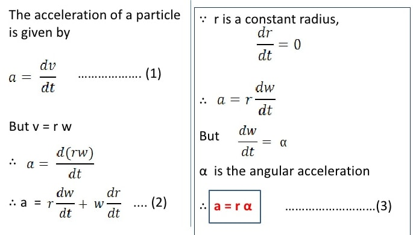

- If the angular velocity of a body changes from ω1 to ω2 in time t, then the angular acceleration, α can be expressed as;
α = (ω2–ω1)/t - Units for angular acceleration are radians per second squared (rad s-2 ) or second-2 (s-2).
- When α is constant with time, we say the body is moving with uniform angular acceleration.
Note: In uniform circular motion α is equal to zero.
Relationship Between Angular Acceleration and Linear Acceleration
